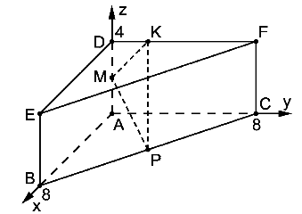

Prism¶
Problem
The image shows a right prism \(ABCDEF\) with the points \(A(0|0|0)\), \(B(8|0|0)\), \(C(0|8|0)\) and \(D(0|0|4)\).
Determine the distance between the two vertices \(B\) and \(F\).
The points \(M\) and \(P\) correspond to the midpoints of the edges \([AD]\) and \([BC]\). The point \(K(0|y_K|4)\) is located on the edge \([DF]\). Determine \(y_K\) so that the triangle \(KMP\) is orthogonal in \(M\).
Solution of part a
First, we need to calculate the coordinates of the vertex \(F\) located above the point \(C\) in \(z\)-direction, at the same height as the point \(D\). \(F\) therefore has the coordinates \(F(0|8|4)\).
The distance between \(B\) and \(F\) can be calculated as
We can verify the result with the help of Sage by constructing the point \(F\) and determining its distance to the point \(B\).
Solution of part b
The midpoint \(M\) of the edge between the points \(A\) and \(D\) can be determined by
Correspondingly, we obtain the coordinates of the midpoints \(M(0|0|2)\) and \(P(4|4|0)\).
In order to determine the \(y\)-value of the point \(K\), we will use the condition that the triangle \(KMP\) has to be orthogonal in \(M\). This implies that the inner product of the vectors \(\vec k\) and \(\vec p\) connecting the point \(M\) to the points \(K\) and \(P\), respectively, must vanish. The vectors can be determined as
with the inner product
Therefore, we find \(y_K=1\).
Sage offers a fast way to verify the solution: